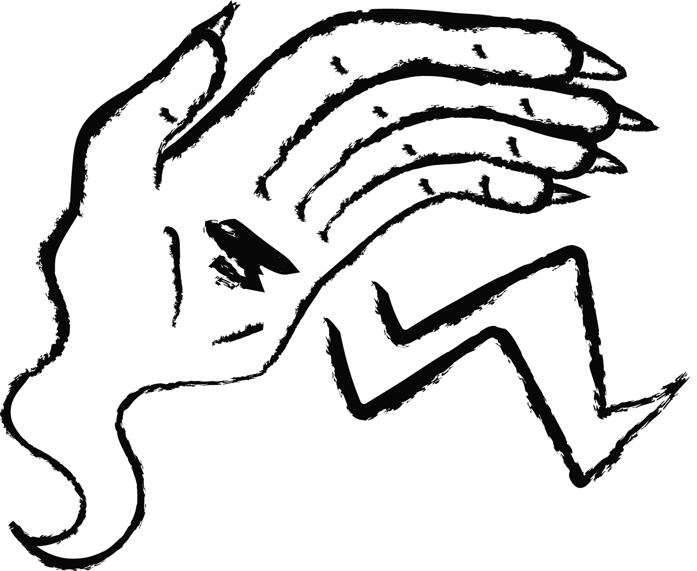

hello!
> welcome to wazwizwhims.com, a land of great deals and deep sorcery
Contact me at wazwizwhims@fake-email.com or wail my true name into the ether!

> welcome to wazwizwhims.com, a land of great deals and deep sorcery
Contact me at wazwizwhims@fake-email.com or wail my true name into the ether!

You can't go wrong with taking a stop at 'The Stall That Has It All'. For all manner of whimsies, The Wizard is here to help.
0.9.3
added spellcraft
---
0.9.2
added the orb, fixed the arcane realms (mostly)
---
0.9.1
remade homepage using magehand for better mobile compatibility
---
0.9
rewrote spelltome again and added fresh new potion designs
---
0.6
ghouls
---
0.3
more stylised text boxes
---
0.2
background, yellow texboxes and asides
---
0.1
basic html, links between pages
records the speech of the wizard and progress of the quest
the orb listens